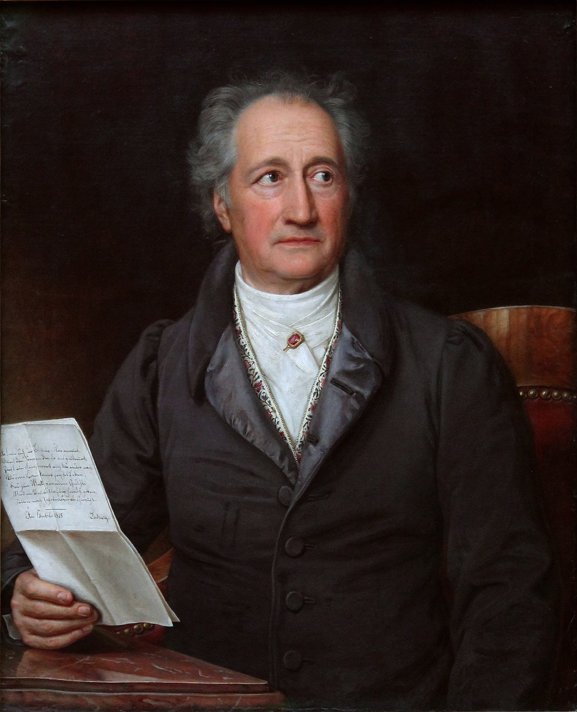
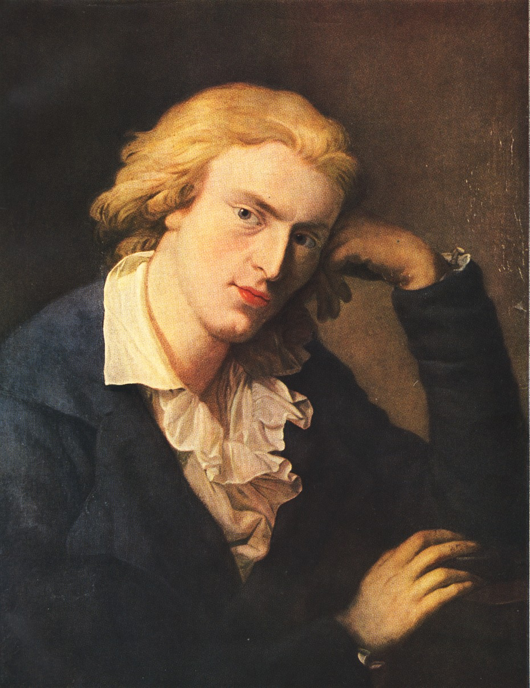

Preromantismus
Johann Wolfgang von Goethe [Géte]
- žil od roku 1749 do roku 1832
- hodně cestoval do Itálie, často pobýval v českých lázních (Karlovy Vary - 13x, Františkovy Lázně - 33x, Mariánské Lázně - 4x, Teplice - 3x)
- dílo - Faust
- dvoudílná veršovaná tragédie
- inspiraci čerpal ze středověké legendy o učenci Faustovi, který za poznáním prodal duši ďáblu
Friedrich Schiller [Šiler]
- žil od roku 1759 do roku 1805
- dramatik, překladatel a básník
- dílo - Óda na radost
- její text použil Beethoven v závěru své 9. symfonie - S Ódou na radost
- hymna Evropské unie a Rady Evropy
České národní obrození
- po bitvě na Bílé hoře (1620) postihlo český národ období úpadku
- poněmčování, český jazyk pouze na vesnici, povoleno jen katolické náboženství
Jazykověda
Josef Dobrovský
- psal německy (nevěřil v budoucnost českého jazyka a chtěl ho dostat k němcům)
- německá díla
- Zevrubná mluvnice jazyka českého
- Dějiny české řeči a literatury
Česká expedice
- nakladatelství
- založil ji v roce 1790 Václav Matěj Kramelius
- vydával vlastní noviny - Pražské poštovské noviny, později Krameliusovy čísařsko-královské vlastenecké noviny
Dívadlo
- začalo vychovávat české herce, vytvořilo české hry a prováděla pravidelná představení
- divadla
- Divadlo na Kotcích
- Stavovské divadlo
- Bouda - v roce 1789 bylo zbořeno na Konském trhu
Josef Jungmann
- pětidílný slovník česko-německý
- překládal z francouzštiny, angličtiny a němčiny